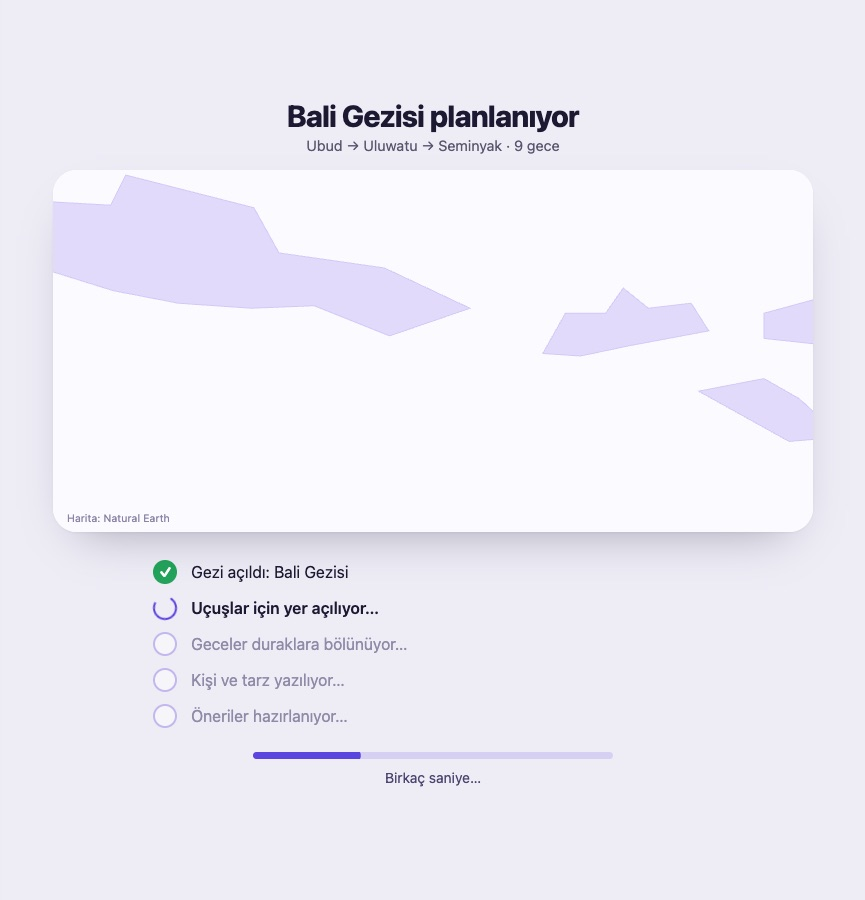

Dört adım, ikinci tur. Her ekran oynatılabilir ya da kare kare gezilebilir. Pano ve planlama ekranı ayrı çiziliyor; burada yok.
Sohbet sırasındaki sağ taraf (kontrol listesi, Oluştur kartı, önizleme) bugünkü sırayla duruyor. Oluşturma ekranının haritası, uçağı ve adım listesi de bugünkü gibi; yalnız fotoğrafların çıkışı ve arkasındaki kutu değişiyor.
Düzen korunuyor: büyük soru, büyük kutu. Yuvarlak mor şekiller gitti; yerine arka plan için üç seçenek var (kutunun altındaki düğmeden değiştir). Kutunun içindeki örnek cümleler sırayla yer değiştiriyor. Sağ üstte para birimi, dil ve profil resmi.
Şimdiye kadar 2 gezi planladın
Beyaz özet paneli kalktı. Fotoğrafın altında yalnız bir başlık ve altında tek satır mini bilgi var: tarih, gün sayısı ve kimle. Başlığın yeri için iki seçenek çizdim.
"Şak" diye açılmıyor. Yazdığın kutu küçülüp sohbetin ilk balonuna akıyor; ana ekran sönüyor, sohbet soldan, sağ taraf sağdan bir an sonra geliyor. Sonra kontrol listesi okunanları tek tek işaretliyor.
Sohbet araya girdiğin bir soruyu önce kısaca ve dürüstçe cevaplıyor, sonra kendi sorusuna dönüyor. Her soru, neyi açacağını yanında soluk söylüyor. Soru sırası: gün → ne istediğin → rota → kimle → nereden.
"Nereye" satırı nabız atar. Yer olmadan gezi açılmaz; ama düğme kapalı da durmuyor.
Bugünkü davranış. Model bir mesajı okurken basılırsa, yolda olan okuma bırakılır, bilinenle kurulur.
3 saniyelik otomatik geri sayım bugünkü gibi çalışıyor; "Vazgeç" ile durdurulur.
Düğmeye basılınca sağdaki kart haritaya dönüyor; harita ve uçak bugünkü gibi. Fark şu: uçak inince haritanın beyaz kutusu eriyip ince bir çizgiye dönüyor ve fotoğraflar kutusuz, sayfanın üstünde süzülüyor. Soldaki sohbette her adım tikli bir satırla akıyor. Pano bu adımın hemen ardından açılıyor; panonun kendisi ayrı çiziliyor.

Aynı beş hareket her yerde: kontrol listesinde ve sohbette; pano çizildiğinde ona da aynı sözlük önerilecek. Aynı his, aynı süre. Tekrar düğmesiyle tek tek izleyebilirsin.
Düğme hep "Oluştur" diyor; elde ne olduğu altında yazıyor. Hiçbir şey belli değilken de basılıyor, ama yer olmadan gezi açılamayacağı için sohbet "önce nereye gittiğini söyle" diyor. Kabul mü?
Gün → ne istediğin → rota → kimle → nereden. Bugünkü sıra tam tersi: nereden → kimle → gün. Yeni sırayı onaylıyor musun?
A · Rota (önerim), B · Aurora, C · Topografya. Hangisi?
Altta yalnız başlık ve tek satır bilgi. A (başlık altta) mı, B (başlık fotoğrafta) mı? Satırda başka ne olsun ya da olmasın?
Kutu kalkıyor, fotoğraflar sayfanın üstünde süzülüyor, harita ince çizgi olarak kalıyor. Böyle mi?
Koda gece eklemiştim: sağda "Plan taslağı" kartları ve önizlemenin kontrol listesinin üstüne alınması. Çizimde yok. Öneri: ikisini de kaldırıp bugünkü sıraya (kontrol listesi, Oluştur, önizleme) dönmek.
Beş hareket ve süreleri uygun mu?